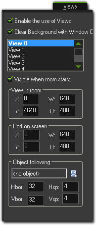
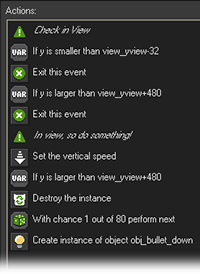

Tutorial
Page 13 of 13
A Room With A View
Up to now we fooled the player in the sense that we were not really flying through a game world but the background was just scrolling. This has a number of disadvantageous.
In particular, the background cannot change easily (e.g. it is difficult to halfway fly over land. Also, even though you can use time lines, it is more difficult to have different actions
appearing nicely spread out over time.
In this final section we will briefly indicate a different way of creating a scrolling shooter. In this approach there is a big room through which the plane really moves. We use a
so-called view such that the player sees only part of the room at any time. To achieve this, a number of changes to the game are required. We will briefly discuss them here.
Let us first create the basic room. We give the room a width of 640 as before but now we give it a height of 4800. The background image we no longer give a speed. We put
islands at various places in the room. The island objects no longer need a speed and we can also remove the step event.
They are now fully static objects. The plane we place at the bottom of the room and we give the plane, in its creation event, a vertical speed of -2 to make sure that it flies
with some speed if the user does nothing. Finally we define the view. To this end, click on the Views tab in the room form. Indicate that we want to enable views.
Define the first view and make it visible at the start. As a top position, indicate 4320, that is, the view will be at the bottom of the room. So it looks as follows:

We have to make sure that view moves with constant speed. To this end we will (mis)use the step event of the life controller object. In it we add the action to set a variable and
set variable view_yview relative to -2. Variable view_yview indicates the top position of the first view in the room. (When there are multiple views you should
use view_yview[0].)
So in each step the position of the view moves 2 pixels upwards creating the scrolling. There are many other variables related to views but we won’t need them here. We should
also check whether view_yview is larger than 0. If it becomes 0 the view has reached the top and we should stop the game.
Note that, for the main plane we wanted to avoid that the player can move the plane out of view. To this end we checked whether the position of the plane was not too high up
or too high down. We now have to use the variable view_yview in these comparisons to make sure that the plane stays within view.
We have a similar problem with the position of the information panel, and the health bar, etc. We did place them at the bottom of the room, but now we must draw them at the
correct place relative to view_yview to make sure they stay in sight.
For the bullet that the plane shoots we must increase the speed a bit to compensate for the moving view. Also we should destroy it when it moves out of the view.
It remains to handle the enemy planes. We no longer use a time line or controller object. We will place all enemy planes already in the room, but we will not let them move until they
become visible. So we do not set their initial speed and in the step event we first check whether they are in the view. If so we let them move. Also, we will only let them shoot if they
are in the view. For example for the third enemy plane the step event looks as follows:

Note that we should use a smaller vertical speed than before. Both for the enemy planes and for the bullets we should also change the conditions when they must be destroyed.
The most complicated one is enemy plane 4. It must come from behind. The trick is as follows. We again place it in the room from the start but we make it invisible. Also, as long as it is
invisible we do not let it react to collisions with bullets or the main plane. When it lies below the view we make it visible and let it move (with larger speed). See the example game on how
this is achieved.
Now it is time to build the room. We place sets of different enemy planes at strategic places in the level. Again it is easy now to create formations and nice challenges.
As you can see, using views you can create very interesting scrolling shooters with relatively little work. Clearly the game need a lot more work. It is in some sense still too easy to finish
and it is definitely too short. Also, some nice boss at the end would be great. Just use it as a first step and build from there.